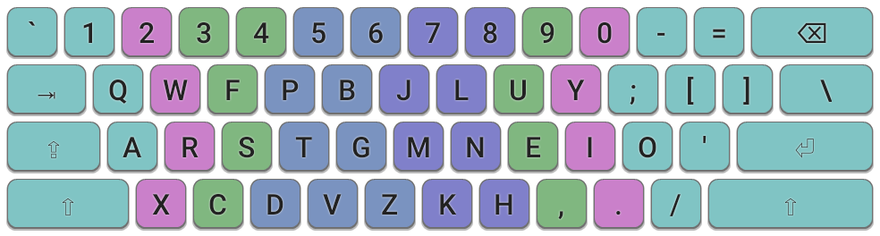

Colemak-DH is a refinement of the standard Colemak layout that improves ergonomics by reducing lateral finger movement on the home row. It repositions certain high-frequency keys to promote more natural vertical motion and better use of stronger fingers, resulting in increased comfort during extended typing.
These adjustments slightly modify the original Colemak arrangement, including some commonly used key clusters. As a result, users may need to adapt their muscle memory, though the layout still remains largely similar in structure and design.